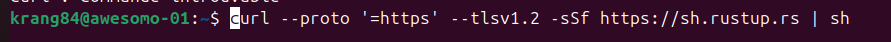

How to Install Rust on Ubuntu/Debian
The recommended way to install Rust is by using rustup, the official Rust installer and version manager.

1.curl is a command-line tool to download data from the internet.
Here it fetches the installation script for Rust.
2. Options used
- --proto '=https' → Forces curl to only use HTTPS protocol. This prevents downloading over insecure connections.
- --tlsv1.2 → Requires at least TLS 1.2 for encryption (stronger security).
- -s → Silent mode (no progress bar).
- -S → Show errors (so you see them even with -s).
- -f → Fail silently on server errors (prevents writing an HTML error page to your terminal).
3. https://sh.rustup.rs
This is the official Rust installer script provided by Rust maintainers.
It’s just a shell script that knows how to download and set up rustup.
4. | sh
The pipe (|) sends the downloaded script directly into sh (the shell interpreter), which executes it immediately.